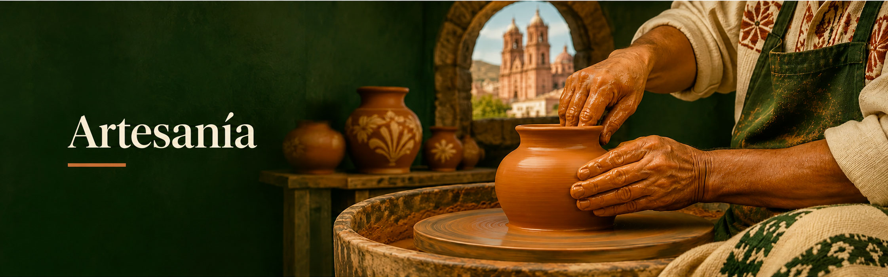

Explora la colección de arte
Descubre obras y artistas de distintas épocas

Bisonte del techo de la Gran Sala de la cueva de Altamira
Bisonte del techo de la Gran Sala de la cueva de Altamira Pintura rupestre prehistórica (Paleolítico Superior) realizada sobre piedra con pigmentos naturales; destaca por el volumen que aprovecha el relieve de la roca.

La Creación del Hombre
Fresco renacentista de Miguel Ángel en la bóveda de la Capilla Sixtina (c. 1511), centrado en el instante cercano al contacto entre Dios y Adán.

Cristo Muerto
Pintura al temple sobre lienzo de Andrea Mantegna (c. 1480), célebre por su marcado escorzo frontal y el dramatismo de la escena.